Q-Deep-Eye
Advancing DeepMind's Q-Networks
Jamis Johnson, Lance Legel & Angus Ding
Q-Networks Review
- Q-Learning + Convolutional Networks to represent state space
- Replay learning
Q-Networks Review
Q-Networks Review - Performance

Multi-GPU Optimization
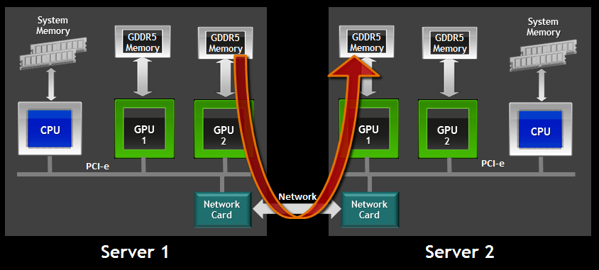RDMA can bypass the CPU for internode communication
... but we don't get RDMA in AWS land :(
Multi-GPU Optimization
- Model Parallel
- Data Parallel
- Ensemble Methods
Model Parallel
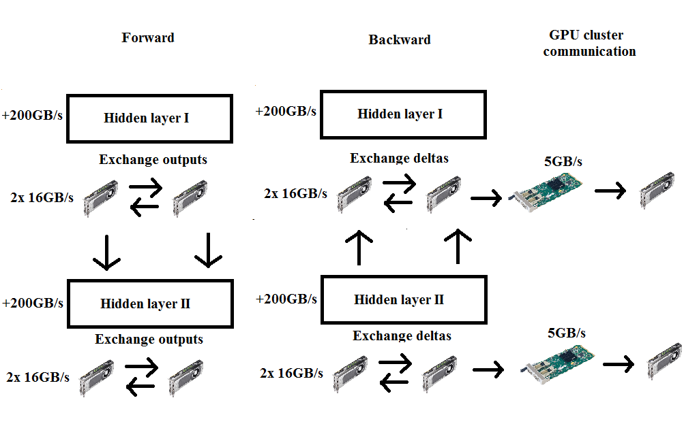Data Parallel
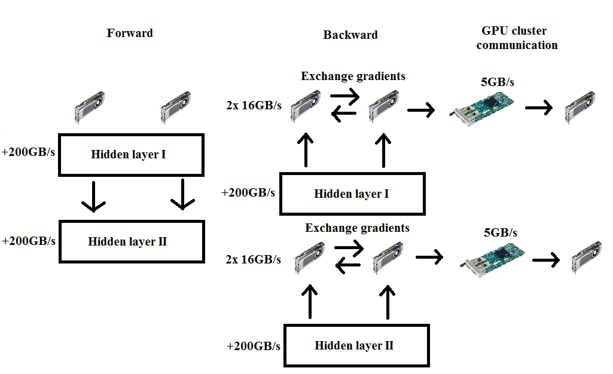Model + Data Parallel for ConvNets
One weird trick for parallelizing convolutional neural networks, Alex Krizhevsky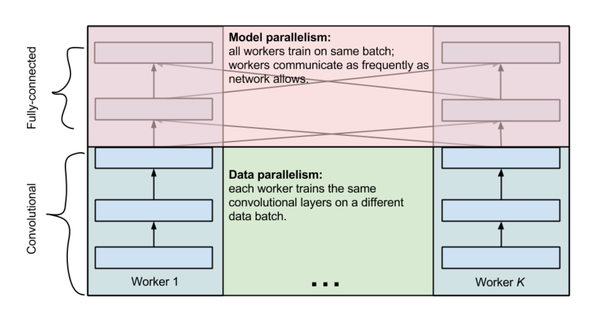
Model + Data Parallel for ConvNets
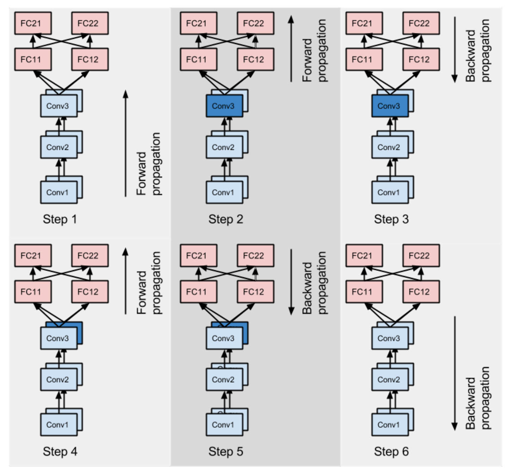Challenges: New Language & Framework
LuaJit, Torch (nn, cutorch, cunn), AWS, Cuda
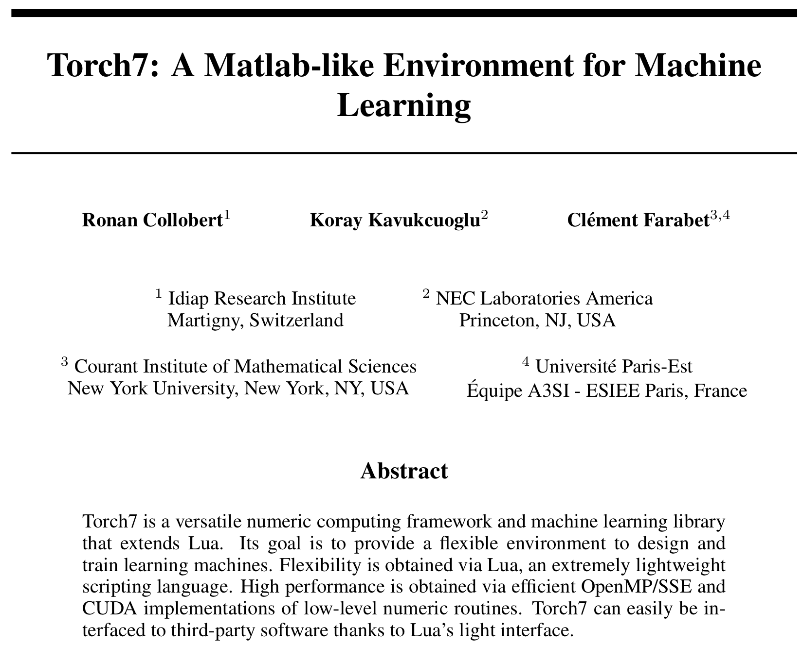Challenges: Bleeding Edge
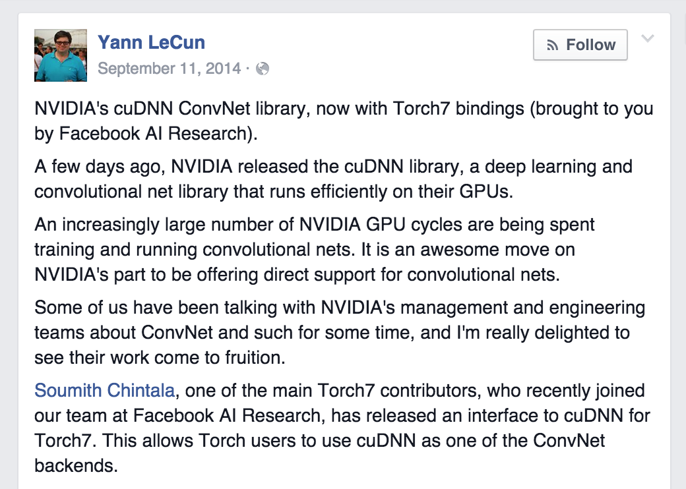Challenges: Bleeding Edge
Multi-GPU support in cutorch is a few months old! Very little documentation. We've been communicating with a facebook Torch developer to navigate the tricky waters. DeepMind's DQN code uses a deprecated version of cunn which indicates it is probably from 2013.
Q-Network Ensemble Averaging
"Ensemble averaging creates a group of networks, each with low bias and high variance, then combines them to a new network with (hopefully) low bias and low variance."
Bias-Variance Tradeoff
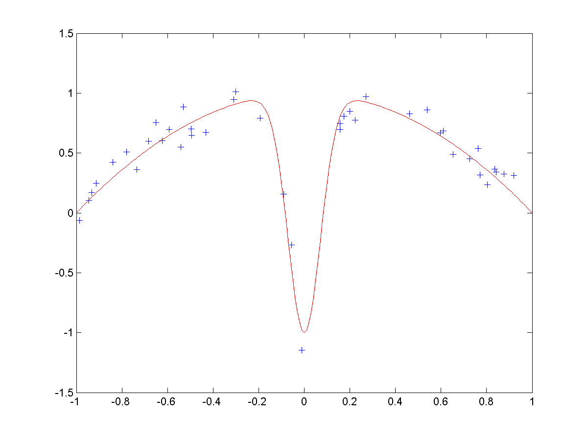 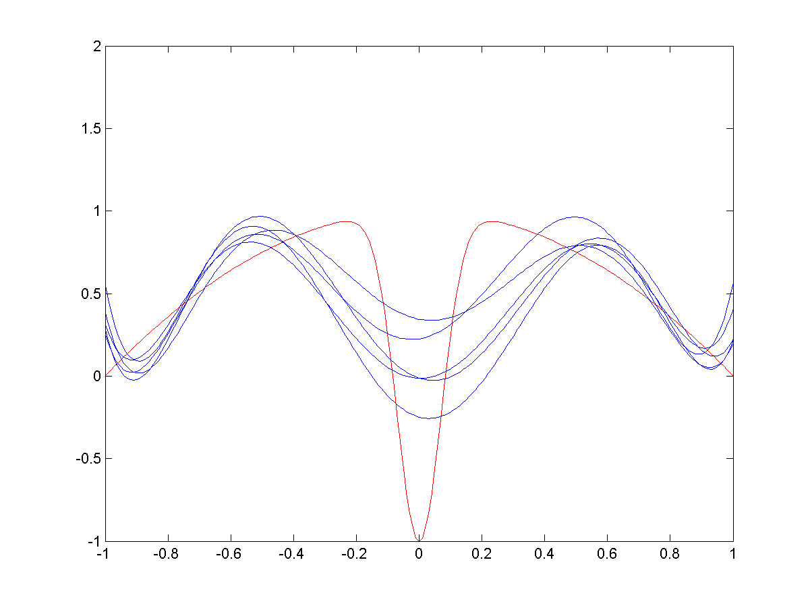 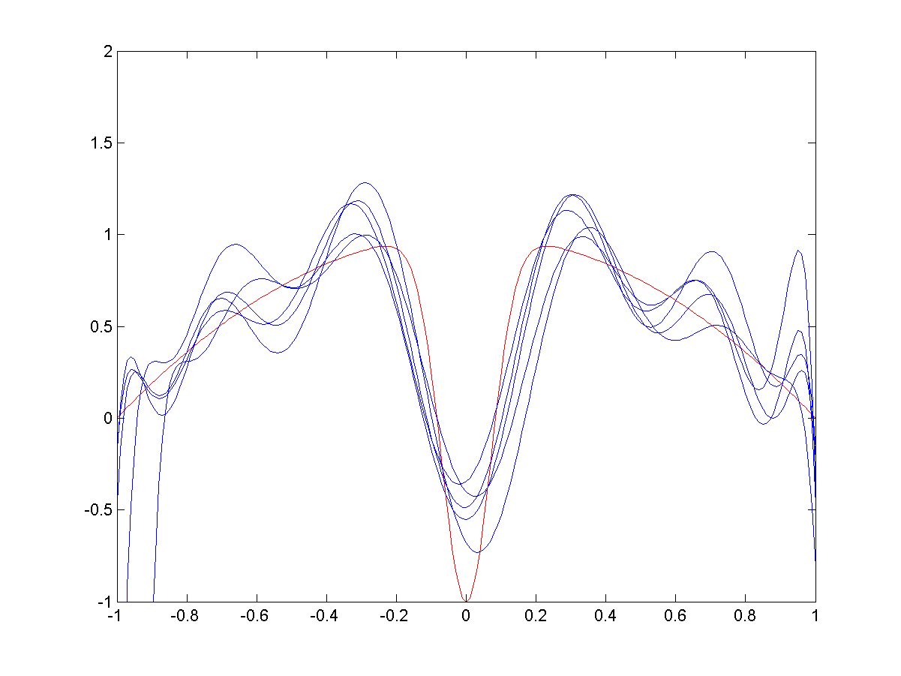 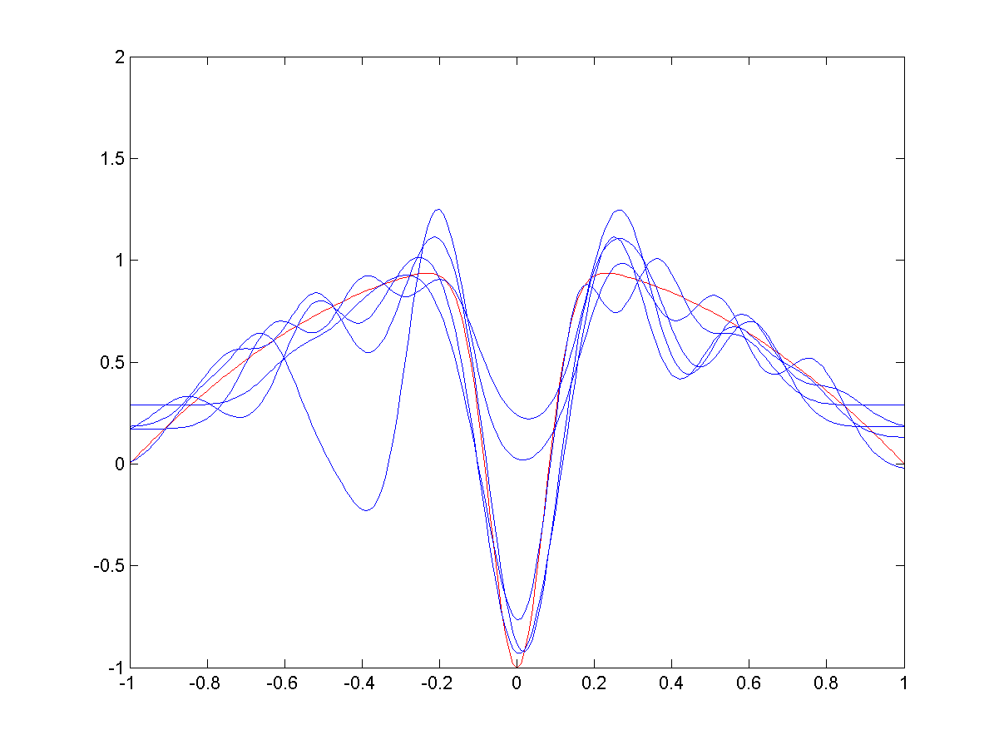
Network Training
A light weight master node signals multiple slaves to each train a different network architecture Each slave is a g2.xlarge GPU-focused AWS machine.Running the Ensemble
On each iteration the master node dispatches the 4 frames to each slave node, or each trained network. All networks return their opinion for the best command back to the master. The master will then averages among these options and start the process over.Exploration
"The definition of insanity is doing the same thing over and over and expecting different results."